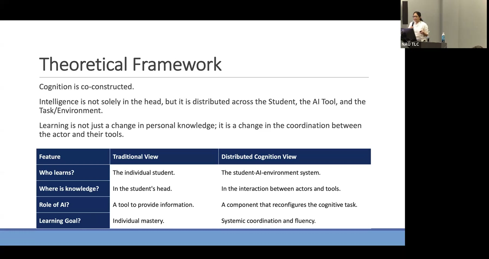
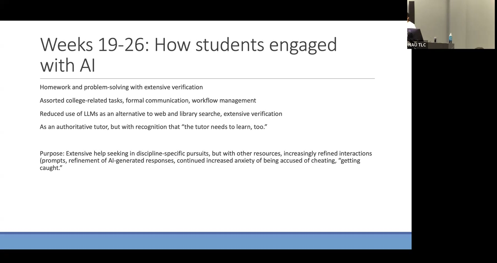

Distributed Cognition and GenAI: How Undergraduates Learn with AI Over Time
A 26-week longitudinal study tracing how seven undergraduates developed increasingly sophisticated partnerships with generative AI.
Presented by Priyanka Parekh, Assistant Research Professor, Center for STEM Teaching and Learning, Northern Arizona University
About This Project
Most research on student AI use captures a snapshot in time, but how students engage with generative AI evolves substantially over months of practice. This longitudinal qualitative study followed seven undergraduates across three Arizona universities over 26 weeks, conducting regular interviews about their use of AI tools for learning. The theoretical lens of distributed cognition reframes AI not as a tool that students use, but as a component that reconfigures the cognitive task itself: intelligence is distributed across the student, the AI system, and the task environment. From this perspective, changes in how students engage with AI over time reflect changes in how cognition itself is organized, not just changes in tool adoption.
Three distinct phases of student AI engagement emerged from the data. In weeks 1-10, students used AI primarily for speed and shortcut — homework help, web search replacement, and social positioning. By weeks 11-18, use became more deliberate: students verified AI outputs, refined prompts iteratively, and began treating AI as an authoritative but fallible tutor. By weeks 19-26, students had shifted toward a partnership orientation, using AI with extensive verification for discipline-specific work while also recognizing, in the words of one participant, that "the tutor needs to learn, too." A persistent thread across all phases was anxiety about being accused of academic dishonesty. Students with learning differences and first-generation college students showed the most pronounced benefit from AI's role as a cognitive load reducer, enabling deeper engagement with course content. The study calls for clearer institutional policy and discipline-specific guidance on AI use in learning contexts.
Project Highlights

